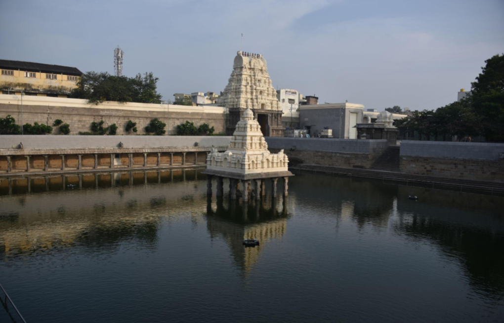

Kanchi Kamakshi Temple

Sri Kanchi Kamakshi Amman Temple is one of the most famous and ancient
temples in Kanchipuram, Tamil Nadu. The temple is dedicated to Goddess Kamakshi,
a form of Goddess Parvati, and is considered one of the important Shakti
Peethas in India. Built in Dravidian architectural style, the temple is known
for its beautiful carvings, spiritual importance, and peaceful atmosphere.
Thousands of devotees visit the temple every year to seek the blessings of
Goddess Kamakshi. The temple also plays an important role in the religious
and cultural heritage of Kanchipuram.